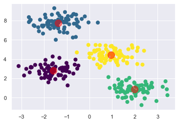

Kmeans¶
屬於EM(Expectation Maximization)演算法:
E: 期望值最大化。每一次求取期望值(平均數、質心)
M: 依最大可能性(點對質心的距離)歸類樣本
持續循環。
作法:
選擇分成K類，並隨機取K個點作為集群中心
每一點分到最近的集群中心
重新計算各組集群中心，使用平均數
重複2. 3.動作直到集群不變
步驟一:產生亂數資料¶
import matplotlib.pyplot as plt
import seaborn as sns; sns.set() # for plot styling
import numpy as np
from sklearn.datasets.samples_generator import make_blobs
# make_blobs產生隨機資料
X, y_true = make_blobs(n_samples=300, centers=4, # 隨機300筆資料，分4群
cluster_std=0.60, random_state=0) #標準差0.6，亂數種子0
# X預設產生2個變數，若要2個以上，調整n_feature=參數
plt.scatter(X[:, 0], X[:, 1], s=50);
C:\Anacoda3\lib\site-packages\sklearn\utils\deprecation.py:143: FutureWarning: The sklearn.datasets.samples_generator module is deprecated in version 0.22 and will be removed in version 0.24. The corresponding classes / functions should instead be imported from sklearn.datasets. Anything that cannot be imported from sklearn.datasets is now part of the private API.
warnings.warn(message, FutureWarning)
X.shape, y_true.shape
((300, 2), (300,))
300筆資料，2個變數
步驟二:使用Kmeans進行分類¶
非監督式學習一般不需要做資料切割，因為無標記(沒有y)，所以即使分出測試資料，也無法計算分數
重要參數說明:
n_clusters: 分成幾群
init: 起始值
max_iter: EM週期數
tol: 容忍度，當變動小於…時，停止。預設值為\(10^{-4}\)
precompute_distances: 距離函數
from sklearn.cluster import KMeans
kmeans = KMeans(n_clusters=4) #必填，分成4群。預設8群
kmeans.fit(X) #訓練
y_kmeans = kmeans.predict(X) #預測
# 查看真實值與預測值
y_true, y_kmeans
(array([1, 3, 0, 3, 1, 1, 2, 0, 3, 3, 2, 3, 0, 3, 1, 0, 0, 1, 2, 2, 1, 1,
0, 2, 2, 0, 1, 0, 2, 0, 3, 3, 0, 3, 3, 3, 3, 3, 2, 1, 0, 2, 0, 0,
2, 2, 3, 2, 3, 1, 2, 1, 3, 1, 1, 2, 3, 2, 3, 1, 3, 0, 3, 2, 2, 2,
3, 1, 3, 2, 0, 2, 3, 2, 2, 3, 2, 0, 1, 3, 1, 0, 1, 1, 3, 0, 1, 0,
3, 3, 0, 1, 3, 2, 2, 0, 1, 1, 0, 2, 3, 1, 3, 1, 0, 1, 1, 0, 3, 0,
2, 2, 1, 3, 1, 0, 3, 1, 1, 0, 2, 1, 2, 1, 1, 1, 1, 2, 1, 2, 3, 2,
2, 1, 3, 2, 2, 3, 0, 3, 3, 2, 0, 2, 0, 2, 3, 0, 3, 3, 3, 0, 3, 0,
1, 2, 3, 2, 1, 0, 3, 0, 0, 1, 0, 2, 2, 0, 1, 0, 0, 3, 1, 0, 2, 3,
1, 1, 0, 2, 1, 0, 2, 2, 0, 0, 0, 0, 1, 3, 0, 2, 0, 0, 2, 2, 2, 0,
2, 3, 0, 2, 1, 2, 0, 3, 2, 3, 0, 3, 0, 2, 0, 0, 3, 2, 2, 1, 1, 0,
3, 1, 1, 2, 1, 2, 0, 3, 3, 0, 0, 3, 0, 1, 2, 0, 1, 2, 3, 2, 1, 0,
1, 3, 3, 3, 3, 2, 2, 3, 0, 2, 1, 0, 2, 2, 2, 1, 1, 3, 0, 0, 2, 1,
3, 2, 0, 3, 0, 1, 1, 2, 2, 0, 1, 1, 1, 0, 3, 3, 1, 1, 0, 1, 1, 1,
3, 2, 3, 0, 1, 1, 3, 3, 3, 1, 1, 0, 3, 2]),
array([1, 0, 3, 0, 1, 1, 2, 3, 0, 0, 2, 0, 3, 0, 1, 3, 3, 1, 2, 2, 1, 1,
3, 2, 2, 3, 1, 3, 2, 3, 0, 0, 3, 0, 0, 0, 0, 0, 2, 1, 3, 2, 3, 3,
2, 2, 0, 2, 0, 1, 2, 1, 0, 1, 1, 2, 0, 2, 0, 1, 0, 3, 0, 2, 2, 2,
0, 1, 0, 2, 3, 2, 0, 2, 2, 0, 2, 3, 1, 0, 1, 3, 1, 1, 0, 3, 1, 3,
0, 0, 3, 1, 0, 2, 2, 3, 1, 1, 3, 2, 0, 1, 0, 1, 3, 1, 1, 3, 0, 3,
2, 2, 1, 0, 1, 3, 0, 1, 1, 3, 2, 1, 2, 1, 1, 1, 1, 2, 1, 2, 0, 2,
2, 1, 0, 2, 2, 0, 3, 0, 0, 2, 3, 2, 3, 2, 0, 3, 0, 0, 0, 3, 0, 3,
1, 2, 0, 2, 1, 3, 0, 3, 3, 1, 3, 2, 2, 3, 1, 3, 3, 0, 1, 3, 2, 0,
1, 1, 3, 2, 1, 3, 2, 2, 3, 3, 3, 3, 1, 0, 3, 2, 3, 3, 2, 2, 2, 3,
2, 0, 3, 2, 1, 2, 3, 0, 2, 0, 3, 0, 3, 2, 3, 3, 0, 2, 2, 1, 1, 3,
0, 1, 1, 2, 1, 2, 3, 0, 0, 3, 3, 0, 3, 1, 2, 3, 1, 2, 0, 2, 1, 3,
1, 0, 0, 0, 0, 2, 2, 0, 3, 2, 1, 3, 2, 2, 2, 1, 1, 0, 3, 3, 2, 1,
0, 2, 3, 0, 3, 1, 1, 2, 2, 3, 1, 1, 1, 3, 0, 0, 1, 1, 3, 1, 1, 1,
0, 2, 0, 3, 1, 1, 0, 0, 0, 1, 1, 3, 0, 2]))
# 查看兩組相同答案次數
len(y_true[y_true == y_kmeans])
150
兩組答案全部”沒有”符合
原因為預測資料y_kmeans並未依y_true進行編碼。
本例之狀況可能為y_true編號1，y_kmeans為3。
步驟三、查看兩組分類情形¶
方法一¶
# 查詢y_true編碼為1之索引值
import pandas as pd
p=pd.Series(y_true)
print(p[p == 1].index)
Int64Index([ 0, 4, 5, 14, 17, 20, 21, 26, 39, 49, 51, 53, 54,
59, 67, 78, 80, 82, 83, 86, 91, 96, 97, 101, 103, 105,
106, 112, 114, 117, 118, 121, 123, 124, 125, 126, 128, 133, 154,
158, 163, 168, 172, 176, 177, 180, 188, 202, 217, 218, 221, 222,
224, 233, 236, 240, 242, 252, 257, 258, 263, 269, 270, 274, 275,
276, 280, 281, 283, 284, 285, 290, 291, 295, 296],
dtype='int64')
# 查詢y_kmeans編碼為3之索引值
p2=pd.Series(y_kmeans)
#print(p2)
print(p2[p2 == 3].index)
Int64Index([ 2, 7, 12, 15, 16, 22, 25, 27, 29, 32, 40, 42, 43,
61, 70, 77, 81, 85, 87, 90, 95, 98, 104, 107, 109, 115,
119, 138, 142, 144, 147, 151, 153, 159, 161, 162, 164, 167, 169,
170, 173, 178, 181, 184, 185, 186, 187, 190, 192, 193, 197, 200,
204, 208, 210, 212, 213, 219, 226, 229, 230, 232, 235, 241, 250,
253, 260, 261, 266, 268, 273, 277, 282, 289, 297],
dtype='int64')
# (y_true==1) == (y_kmeans==3)
np.all(np.array(np.where(y_true==1))==np.array(np.where(y_kmeans==3)))
False
y_true=1與y_kmeans=3之索引值完全相同
方法二¶
print([i for i, j in enumerate(y_true) if j==1])
[0, 4, 5, 14, 17, 20, 21, 26, 39, 49, 51, 53, 54, 59, 67, 78, 80, 82, 83, 86, 91, 96, 97, 101, 103, 105, 106, 112, 114, 117, 118, 121, 123, 124, 125, 126, 128, 133, 154, 158, 163, 168, 172, 176, 177, 180, 188, 202, 217, 218, 221, 222, 224, 233, 236, 240, 242, 252, 257, 258, 263, 269, 270, 274, 275, 276, 280, 281, 283, 284, 285, 290, 291, 295, 296]
print([i for i, j in enumerate(y_kmeans) if j==3])
[2, 7, 12, 15, 16, 22, 25, 27, 29, 32, 40, 42, 43, 61, 70, 77, 81, 85, 87, 90, 95, 98, 104, 107, 109, 115, 119, 138, 142, 144, 147, 151, 153, 159, 161, 162, 164, 167, 169, 170, 173, 178, 181, 184, 185, 186, 187, 190, 192, 193, 197, 200, 204, 208, 210, 212, 213, 219, 226, 229, 230, 232, 235, 241, 250, 253, 260, 261, 266, 268, 273, 277, 282, 289, 297]
[i for i, j in enumerate(y_true) if j==1] == [i for i, j in enumerate(y_kmeans) if j==3]
False
y_true=1與y_kmeans=3之索引值完全相同
步驟四: 結果¶
# 4個質心(x,y)
kmeans.cluster_centers_
array([[-1.37324398, 7.75368871],
[ 1.98258281, 0.86771314],
[-1.58438467, 2.83081263],
[ 0.94973532, 4.41906906]])
# 繪圖: 散佈圖
plt.scatter(X[:, 0], X[:, 1], c=y_kmeans, s=50, cmap='viridis')
# 質心
centers = kmeans.cluster_centers_
plt.scatter(centers[:, 0], centers[:, 1], c='red', s=200, alpha=0.5);

# 誤差平方和: 每個點到質心距離之和，越小越好
kmeans.inertia_
212.00599621083472
# 循環次數
kmeans.n_iter_
5
# 訓練樣本結果分類
kmeans.labels_
array([1, 0, 3, 0, 1, 1, 2, 3, 0, 0, 2, 0, 3, 0, 1, 3, 3, 1, 2, 2, 1, 1,
3, 2, 2, 3, 1, 3, 2, 3, 0, 0, 3, 0, 0, 0, 0, 0, 2, 1, 3, 2, 3, 3,
2, 2, 0, 2, 0, 1, 2, 1, 0, 1, 1, 2, 0, 2, 0, 1, 0, 3, 0, 2, 2, 2,
0, 1, 0, 2, 3, 2, 0, 2, 2, 0, 2, 3, 1, 0, 1, 3, 1, 1, 0, 3, 1, 3,
0, 0, 3, 1, 0, 2, 2, 3, 1, 1, 3, 2, 0, 1, 0, 1, 3, 1, 1, 3, 0, 3,
2, 2, 1, 0, 1, 3, 0, 1, 1, 3, 2, 1, 2, 1, 1, 1, 1, 2, 1, 2, 0, 2,
2, 1, 0, 2, 2, 0, 3, 0, 0, 2, 3, 2, 3, 2, 0, 3, 0, 0, 0, 3, 0, 3,
1, 2, 0, 2, 1, 3, 0, 3, 3, 1, 3, 2, 2, 3, 1, 3, 3, 0, 1, 3, 2, 0,
1, 1, 3, 2, 1, 3, 2, 2, 3, 3, 3, 3, 1, 0, 3, 2, 3, 3, 2, 2, 2, 3,
2, 0, 3, 2, 1, 2, 3, 0, 2, 0, 3, 0, 3, 2, 3, 3, 0, 2, 2, 1, 1, 3,
0, 1, 1, 2, 1, 2, 3, 0, 0, 3, 3, 0, 3, 1, 2, 3, 1, 2, 0, 2, 1, 3,
1, 0, 0, 0, 0, 2, 2, 0, 3, 2, 1, 3, 2, 2, 2, 1, 1, 0, 3, 3, 2, 1,
0, 2, 3, 0, 3, 1, 1, 2, 2, 3, 1, 1, 1, 3, 0, 0, 1, 1, 3, 1, 1, 1,
0, 2, 0, 3, 1, 1, 0, 0, 0, 1, 1, 3, 0, 2])
Kmeans困難:
起始點: 採kmeans++
分成…群: elbow、Silhouette、
接下來課程會進行說明